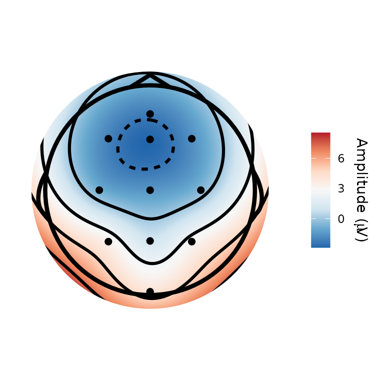
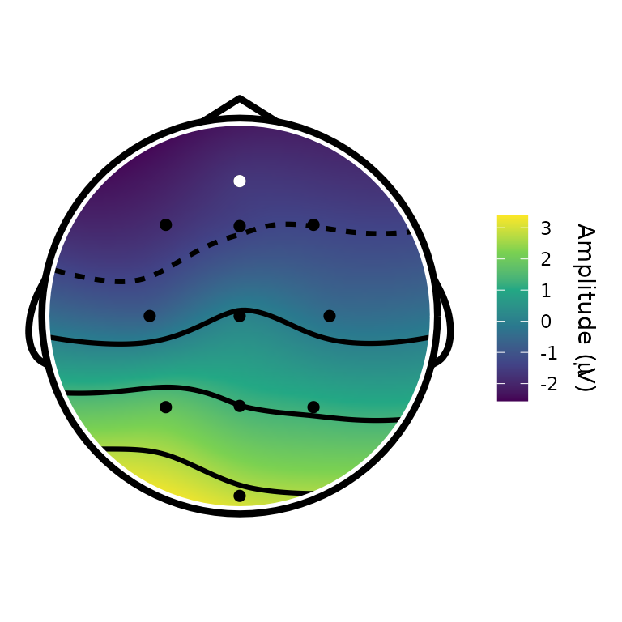
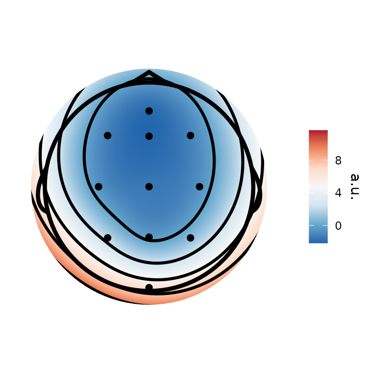
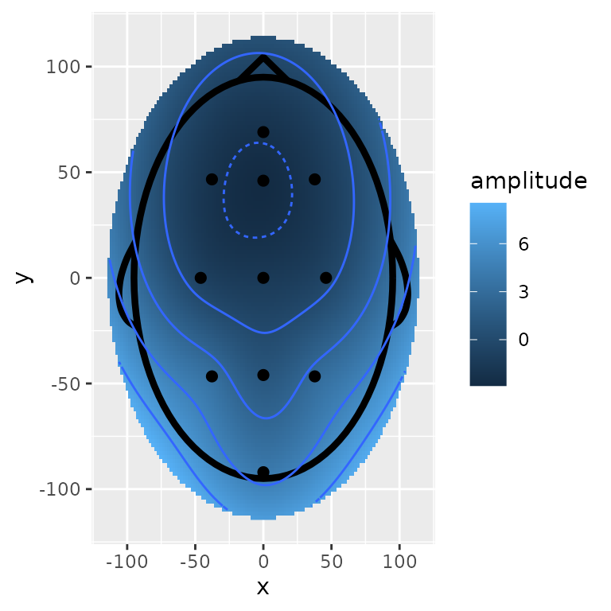
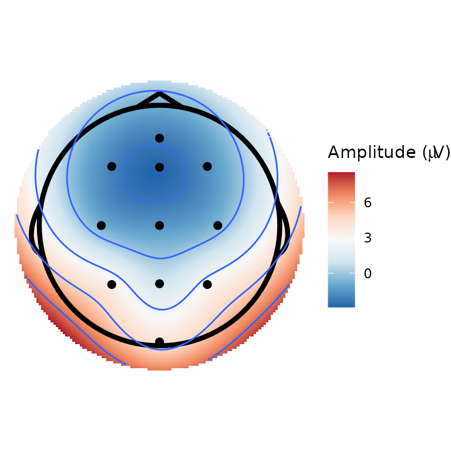
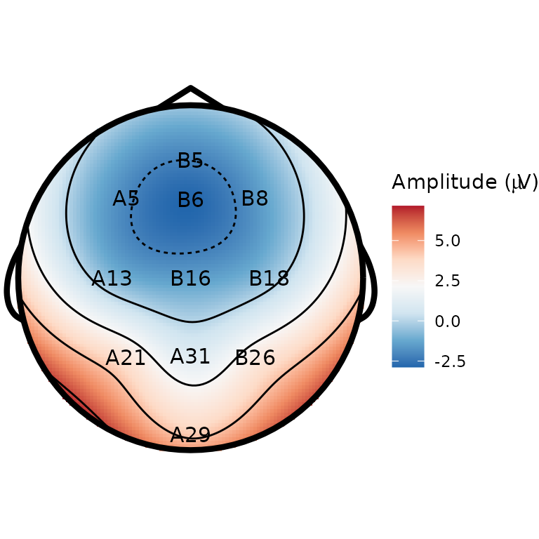
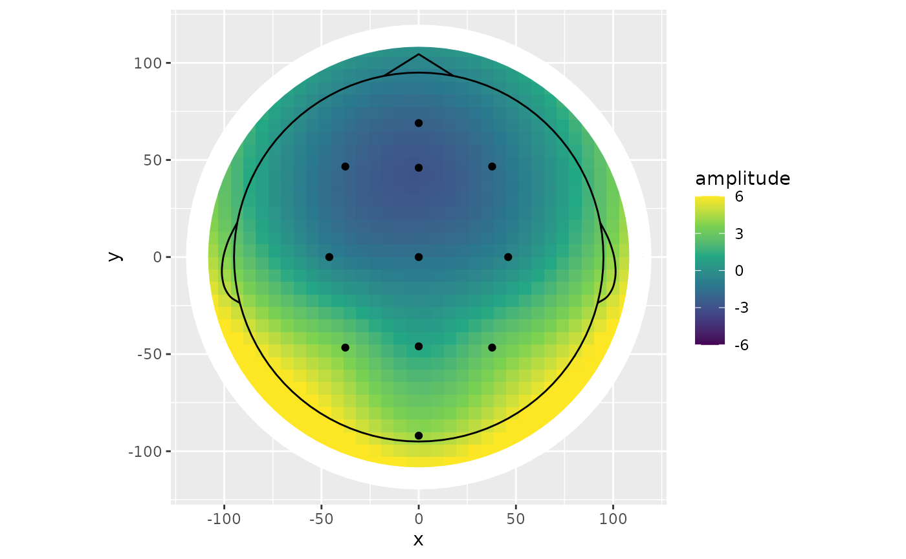

Building a topographical plot
Matt Craddock
2024-10-23
Source:vignettes/topoplot/topoplot.Rmd
topoplot.RmdeegUtils has convenience functions for plotting and
styling topographical scalp maps, which are very frequently used when
exploring EEG and MEG data.
The topoplot() function uses ggplot2 to
create a such a topographical map, with a cartoon head, ears and nose,
and points or text labels indicating electrode positions or names.
Here’s an example using the built-in demo_epochs
dataset.
topoplot(demo_epochs)
#> Creating epochs based on combinations of variables: epoch_label participant_id
#> Using electrode locations from data.
#> Plotting head r 95 mm
topoplot() has many different parameters that can be
used to alter its appearance and select different parts of the data to
be plotted. For example, here we select a specific time period to plot
(the function averages over points within these limits), change the
plotting so that all electrodes and interpolated surfaces are within the
cartoon head, and highlight a specific electrode in white.
topoplot(demo_epochs,
time_lim = c(.1, .2),
palette = "viridis",
highlights = c("B5"),
interp_limit = "head")
#> Creating epochs based on combinations of variables: epoch_label participant_id
#> Using electrode locations from data.
#> Plotting head r 101.2 mm
topoplot() operates on several different types of
eegUtils object, and has different default settings and
behaviour for those objects. For example, for ICA decompositions, it
plots the mixing matrix for each component.
demo_ica <- run_ICA(demo_epochs,
pca = 10) # the data is average referenced, so PCA is required
topoplot(demo_ica, component = 2)
ggplot2 extensions - geom_topo()
For those who desire more control over the plots and are familiar
with ggplot2, there are several custom geoms to help you do
this. As a starter, the geom_topo() creates a full
topographical plot, with cartoon head and points indicating coordinate
locations. This is based on ggplot2’s
geom_raster(), and has such has many parameters in common.
But unlike geom_raster() it can handle an irregular grid.
You are required to supply x, y,
fill, and z aesthetics to use this
function.
fortify methods are included in the package so that most
eegUtils objects can be passed directly to
ggplot(). For more complete control, one might wish to
convert the objects using as.data.frame() first, so that
any desired manipulations such as averaging can be conducted first.
library(ggplot2)
ggplot(demo_epochs,
aes(x = x,
y = y,
fill = amplitude,
z = amplitude)) +
geom_topo()
ggplot(demo_epochs,
aes(x = x,
y = y,
fill = amplitude,
z = amplitude)) +
geom_topo() +
scale_fill_distiller(palette = "RdBu") +
theme_void() +
coord_equal() +
labs(fill = expression(paste("Amplitude (", mu,"V)")))
There are several different parameters that can be passed to
geom_topo() to change the appearance of the plot.
ggplot(demo_epochs,
aes(x = x,
y = y,
fill = amplitude,
z = amplitude,
label = electrode)) +
geom_topo(grid_res = 200,
interp_limit = "head",
chan_markers = "text",
chan_size = 4,
colour = "black") +
scale_fill_distiller(palette = "RdBu") +
theme_void() +
coord_equal() +
labs(fill = expression(paste("Amplitude (", mu,"V)"))) 
Building from the ground up
For those who want even more control, individual constituent parts can be added to the plots as below.
stat_scalpmap() adds an interpolated surface from an
irregular grid of electrodes, rounded off as a circular shape.
geom_head() adds a cartoon headshape.
geom_channels() is a wrapper round geom_text()
and geom_point() that prevents overplotting when submitting
an eegUtils object directly, and can be used to plot
channel locations as points or text labels. geom_mask() can
be used to draw a circular masking ring around the edge of the
interpolated surface, to smooth any rough edges. This is useful when
using a low grid resolution, which is advisable when using facetting or
animation. All of these geoms are customisable as standard
ggplot2 geoms are.
ggplot(demo_epochs,
aes(x = x,
y = y,
fill = amplitude)) +
stat_scalpmap(grid_res = 60) + #based on geom_raster()
geom_mask(r = 114, size = 6) + #based on geom_path()
geom_head() + #based on geom_path() and geom_curve()
geom_channels() + #based on geom_point() and geom_text()
scale_fill_viridis_c(limits = c(-6, 6),
oob = scales::squish) +
coord_equal()